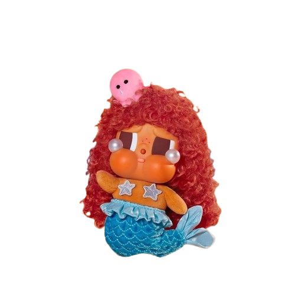

Aku punya sesuatu yang menarik banget buat kamu dan semoga kamu suka yaa. Tapi sebelum aku kasih lihat, kamu harus janji dulu buat dengerin sampai akhir. Mau kan?
Spesial Buat Kamu! 🧸🍃
Karena aku belum bisa ngerayain ulang tahun bareng kamu hari ini, aku buatin kue virtual dulu yaa wkwkwk.
Ini Kue Cokelat dilapisin krim Vanilla, plus selai Blueberry kesukaanmu, lengkap dengan replika mini POP MART Cry Baby Ocean Series di atasnya! 🌊🧜♀️
(Ketuk kuenya 3 kali buat tiup lilin dan menyalakan musiknya!)

🎂
Ketukan Lilin: 0/3
Selamat Ulang Tahun, Sayang! ❤️
Dari tempat paling indah di bumi, kamulah pemandangan favoritku. 🌌🌲
"Selamat ulang tahun sayangku cintaku duniaku. Kepala dua nih yeee sekarang, welcome to the jungle yaa lovee hehehe. ini jadi ulang tahun pertama kamu yang aku rayain yaa?? aku berharap banget, di ulang tahun kamu berikut-berikutnya nanti, aku masih jadi orang yang ada disamping kamu, yang selalu ngerayain kamu dengan penuh bahagia dan dengan cara yang unpredictable maybe eheheh ♥"
"Semoga dengan bertambahnya umur kamu, makin bertambah juga hal baik yang datang dari diri kamu sendiri ataupun yang datang ke kamu. semoga kamu semakin dewasa, semakin banyak energinya dan kesabarannya untuk ngadepin aku plenger ini wkwkwk. tetep jadi Zaskia Nanda Ardita yang pertama kali aku deketin sejak 5 November 2025 itu yaa. sekali lagi Happy Birthday My Beautiful Girl. I LOVE U SO MUCH MORE ZASKIA NANDA ARDITA!!! ♥ ♥ ♥."
"last but not least, aku cuman mau bilang... kalo aku ngerasa beruntung banget karena kehadiran kamu di hidup aku, terima kasih sudah jadi "Spark" dalam hidup aku, terima kasih sudah mengisi hari hari aku yg flat ini jadi lebih berwarna. terima kasih sudah mau bersabar menghadapi segala tingkah aku. jangan pernah ada kata nyerah, capek, dan udahan lagi yaa deee. aku mau kamu jadi pelabuhan terakhir aku, tempat berlabuhnya kapal hati ini. aku mau kamu jadi layar kapal aku, yang kasih arah disetiap langkah aku, yang tetap bikin aku melaju walau angin dan badai menerjang, dan yang selalu jadi tujuan pertama, terakhir dan satu-satunya di setiap perjalanan hidup aku"